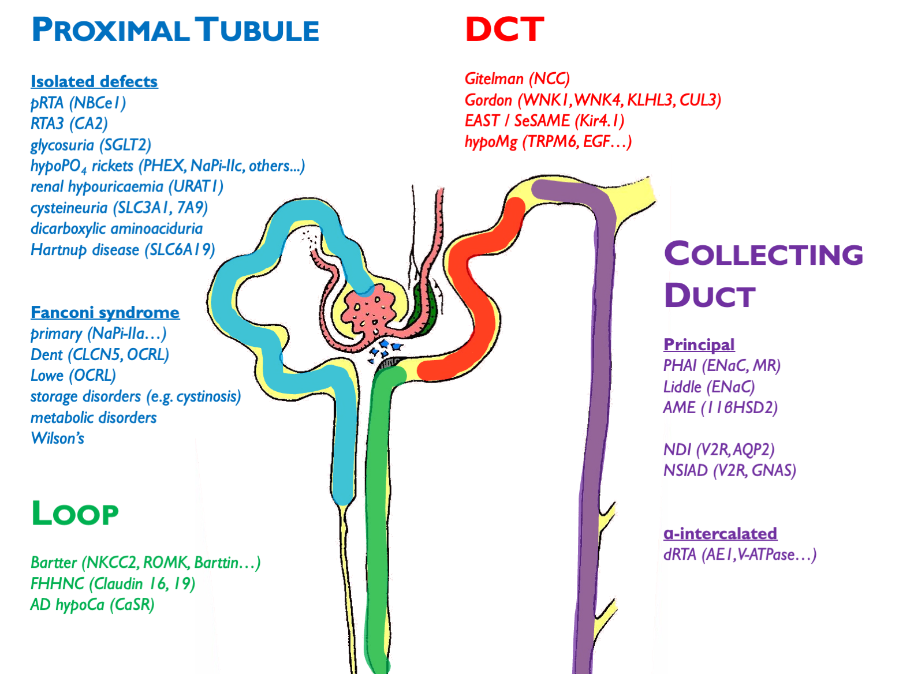
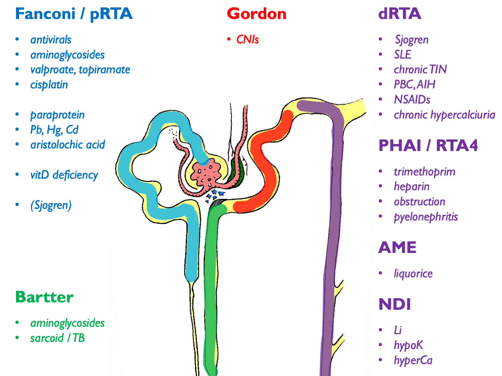
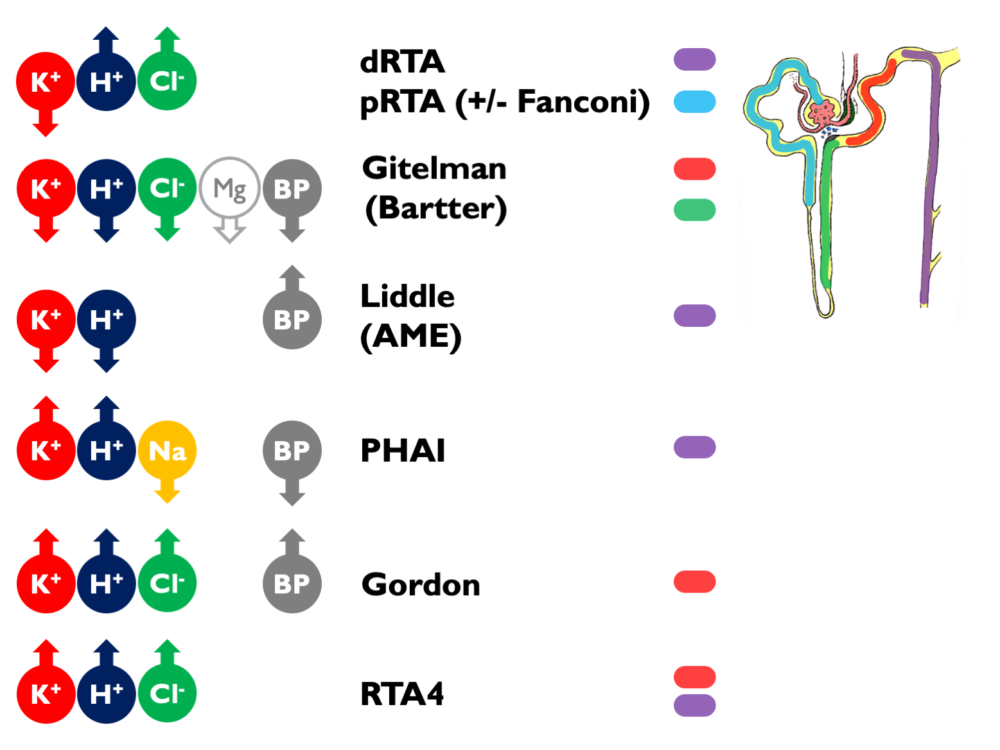
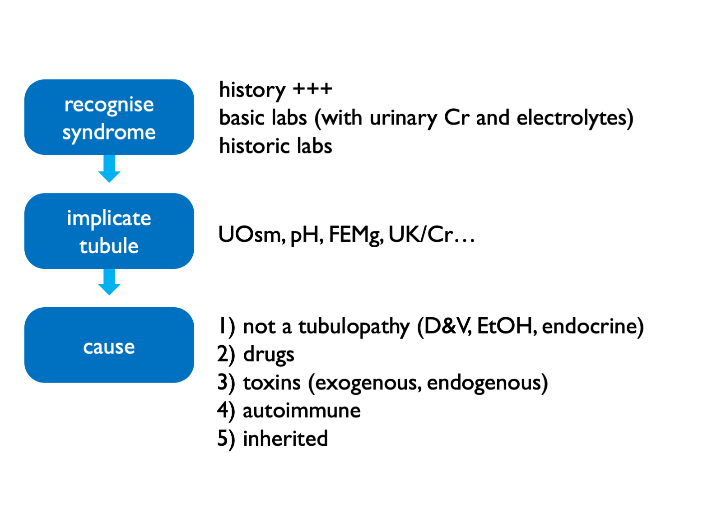
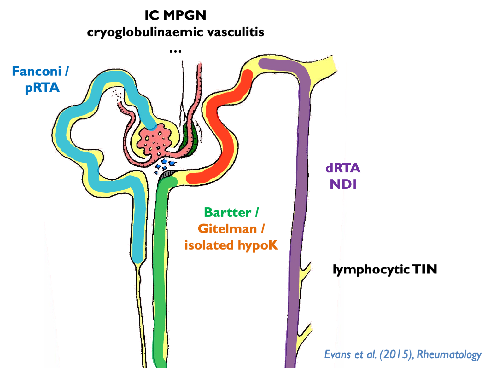

Chapter 17 Tubulopathies
17.1 Inherited
 Other disorders not depicted here (and not necessarily classified as a pure “tubulopathy’):
- ADTKD (e.g. HNF1b etc.)
- FHH (CaSR)
- ciliopathies (ADPKD etc.)
- metabolic disorders (oxalosis etc.)
- endocrine disorders (GRA etc.)
17.1.1 Notes on some of the inherited tubulopathies
FHHNC = familial hypomagnesaemia with hypercalciuria and nephrocalcinosis
Inherited pRTA is very rare; inherited dRTA less so.
Commonest cause of inherited Fanconi syndrome is cystinosis.
XLD hypophosphataemic rickets is the commonest type; causes elevated FGF23 (phosphatonin).
X-linked hypercalciuric nephrolithiasis = Dent’s disease, XLR nephrolithiasis, XLR hypophosphataemia rickets, LMWH proteinuria (all CLCn5 mutations). Encodes chloride channel involved in endosomal acidification – therefore impaired endocytosis by megalin / cubulin. Defective endocytosis of vitD and PTH lead to calciuria.
17.2 Acquired

Autoimmune associations with dRTA other than Sjogren are: SLE, PBC, AIH, thyroiditis.
Can get dRTA mimic secondary to low UNa (e.g. cirrhosis, heart failure, nephrotic syndrome). For complete list of 2ry causes see supplemental table 1 in ESPN clinical practice points, NDT 2021.
17.3 Tubulopathy syndromes
 Other tubulopathy phenotypes:
- NDI and SIAD
- nephrocalcinosis
- recurrent stone-formers
- CKD
17.3.1 Interpretation of these electrolyte syndromes
Causes of hyperchloraemic acidosis:
- diarrhoea / other lower GI losses (upH < 5.5)
- RTA
- ureteric diversion
- iatrogenic chloride excess
Fanconi = glucose, urate, phosphate, aa, LWMP (uPCR > 50 without uACR or RBP), vitD deficiency
Suspect incomplete dRTA if recurrent stones, nephrocalcinosis and borderline low or low-normal TCO2.
NB can get a transient Fanconi-type syndrome (without glycosuria) in untreated dRTA.
17.4 Diagnostic approach in suspected tubulopathy

Exogenous toxins = heavy metals, AA (i.e. herbal preps) Endogenous toxins = paraproteins
17.4.1 Fractional excretions
- FECl <0.5% = not a salt-losing tubulopathy (and therefore purging instead)
- FEMg >2 – 4% = renal wasting
- FEPO4 >10 – 20% = renal wasting
17.4.2 Specialised testing
Rarely a role for more specialist testing:
- urinary acidification test for recurrent stone-formers / nephrocalcinosis (NOT for frank acidosis)
- thiazide test for Gitelman or Gordon (FECl)
- urinary drug screen
- exome testing (available in Scotland for Bartter & Gitelman, Cystinuria, Nephrocalcinosis & Nephrolithiasis (large panel), PHA1 (paeds), tubulopathies and RTA panel (very large panel)
17.5 Sjogren syndrome
Spectrum of kidney disease including (often overlapping):
- pure tubulopathies
- tubuolocentric lymphocytic TIN (= “extraglandular epithelialitis”)
- IC MPGN of which 66% cryoglobulinaemia
- cryoglobulinaemic vasculitis

dRTA associated with Ro, La, hyperIg.
NDI common but almost always well-compensated.
GN associated with lymphoma.
17.6 Lithium-associated tubulopathy
Lithium causes:
- AVP-R (NDI)
- (usually incomplete) dRTA
- chronic TIN
- podocytopathy
- hyperCa (in 10% - can lead to parathyroid hyperplasia, therefore not easily reversible)
17.6.1 Pathogenesis
Renal toxicity largely explicable by effects in the distal tubule - but may have more pervasive effects on the rest of the renal tubule and the glomerulus.
In humans and animals, see chronic TIN with cortical and medullary cysts, predominantly arising from distal tubules (from Lectin stains). High prevalence of FSGS and global GS.
Chronic Li+ leads to down-regulation of AQP2 expression from:
- direct reduction in APQ2 mRNA
- direct effects on AQP2 lysosomal degradation
- increased PGE2 production by medullary interstitial cells
- GSK3b inhibition > beta-catenin > cell-cycle arrest
- growth-arrest of principle cells
AQP2 activity controlled by exo- and endo-cytosis, regulated by phosphorylation and ubiquitination of C-terminus.
17.6.2 Polyuria
AVP-R in up to 40%. May persist long-term.
Both AVP-D and primary polydipsia have been described in patients on chronic Li - therefore may still require water deprivation test. Or perhaps copeptin test?
Rx options:
- low Na diet
- amiloride (preferable if continuing Li) - evidence from 20 patients!
- thiazide
- NSAIDs (indomethacin)
- dDAVP
- viagra (AJP 2012, Am J Nephron 2015)
- tamoxifen (AJP 2018)
Must closely monitor Li+ levels if using diuretics (volume depletion > enhanced PCT reabsorption of Li+ > higher Li+ levels).
17.6.3 TIN
CKD from chronic TIN in up to 20%.
Best data from Lancet meta-analysis, 2012 and Swedish registry report, 2014.
eGFR c. 6 ml/min lower than matched controls.
Big increase in RR of ESKD (c. 8x) but absolute risk of ESKD remains reasonably low. Assuming ESKD risk of 0.1% in the general population, this would be around 0.8% on long-term Li+. (Matches well with reported rate in Lancet meta-analysis: 0.5%.) There are relatively few published data. In the Swedish registry report, ESKD occurred in 15% of the Li+-taking population. This may be due to the older age of these patients; in their age-restricted control population (over 55 yrs), there was an ESKD rate of 2%.
Usually other classical RFs for CKD. Mean duration of Li+ therapy before ESKD was 27 years.
17.6.4 Podocytopathy
Minimal change nephropathy has been described. Occurs within first few months of therapy and reversible on stopping Li+.
FSGS and global GS classically considered to be secondary to the tubulopathy but this may be a direct effect (e.g. foot process effacement common). Good evidence for direct effect on podocyte homeostasis in rodent and fly models: inhibition of GSK3 results in podocyte apoptosis.
17.7 Salt-wasting tubulopathies
The inherited salt-wasting tubulopathies (Bartter and Gitleman syndromes) are characterised by profound salt-wasting with salt-craving and hypokalaemic alkalosis from secondary hyperaldosteronism.
Gitelman commoner than Bartter. In adults, usually type 3 Bartter (overlap with Gitelman phenotype as ClC-Kb also expressed in DCT).
In Bartter syndrome, there is also:
uncoupled tubuloglomerular feedback (in the absence of NaKCl uptake by MD cells, the MD behaves as if there is profound volume depletion, stimulating PGE2 and renin production - hence role for NSAIDs)
hypercalciuria and nephrocalcinosis
usually normal plasma Mg (except in some cases of type 3)
In Gitelman syndrome, there is also:
- hypocalciuria
- hypomagnesaemia
- chondrocalcinosis
- sometimes hypertension in adults
Adults can develop CKD and secondary FSGS (when RASi usually used - otherwise avoid).
Liberal NaCl and K (+/- Mg) supplementation is required to target K > 3 mM and Mg > 0.6 mM. Risk of dangerous hypoK during intercurrent vomiting / diarrhoea. See expert guidelines.